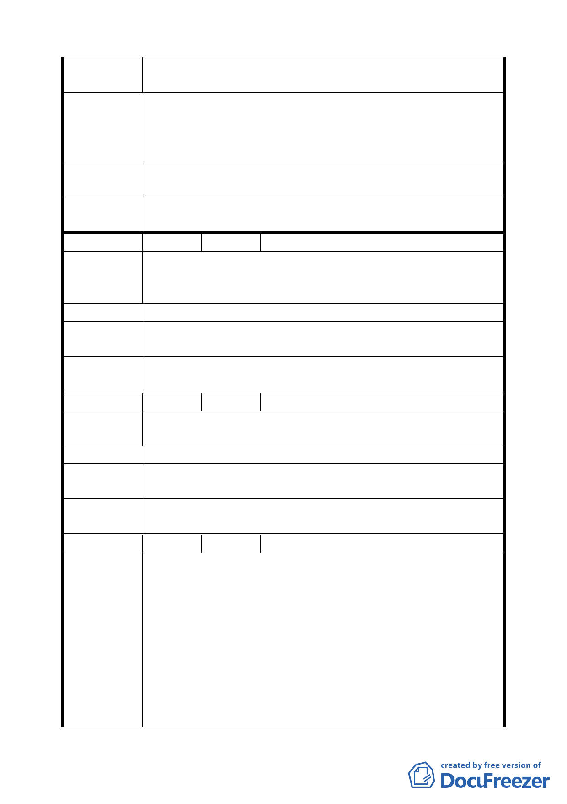

如此即可騰出空間路面，供車輛方便使用，不需再浪費
土地另闢道路。
一、在本區的發展計畫時，是否能把人文景觀和環境生態一
建議辦法
並考慮。
二、請給我們多一點綠地空間，可以悠閒走路呼吸，而不要
太多馬路虎口，不需再浪費土地另闢道路。
專 案 小 組 94.4.14 專案小組第十二次審查會議：基於考量整體交通系統
結 論 需求，仍維持公展案變更為道路，唯應確保人行空間之留設。
委 員 會 議 同意依專案小組審查結論辦理。
決議
編 號 ２ 陳情人 蔡進槁等七人
建議位置：北投區文林段 4 小段３３６、１１６地號（北投
陳 情 理 由 區西安街一段１６弄３１３巷）
建議理由：本綠地作為道路使用逾三、四十年已是既成道路。
建 議 辦 法 請變更細部計畫為道路用地。
專 案 小 組 94.4.14 專案小組第十二次審查會議：同意發展局規劃仍為綠
結 論 地，唯可供車行及指定建築線。
委員會議
決議
同意依專案小組審查結論辦理。
編 號 ３ 陳情人 游蓬燦等 47 人
建 議 位 置：北投區文林段 4 小段 336、116 地號
陳 情 理 由 建 議 理 由：本綠地作道路使用逾三、四十年已是既成道路
建 議 辦 法 請變更細部計畫為道路用地
專 案 小 組 94.4.14 專案小組第十二次審查會議：同意發展局規劃仍為綠
結 論 地，唯可供車行及指定建築線。
委員會議
決議
同意依專案小組審查結論辦理。
編 號 ４ 陳情人 歐陽福桂
建議位置：北投區文林路 4 小段３４６號（北投區石牌路 1
段４３弄１６６巷４號）
建議理由：石牌地私設巷道是市政府發照時，指定的是私人
土地常年累月供他人通行用，很不合理。希望政府加速徵收，
或准以從優作比例，若不臨建地範圍，以移轉方式處理。建
陳 情 理 由 築比例放寬，隨建比例４０％計算。該項土地造成建地變成
道路用地，造成民怨。目前市府也不徵收，也沒計建作處比
例。 92.10.9 補充：榮光公園附近之綠地大部分由非土地
所有權人佔用，影響環境衛生，政府疏於管理，完全喪失原
來設置綠地之意義。
第 三五 頁，共 49 頁